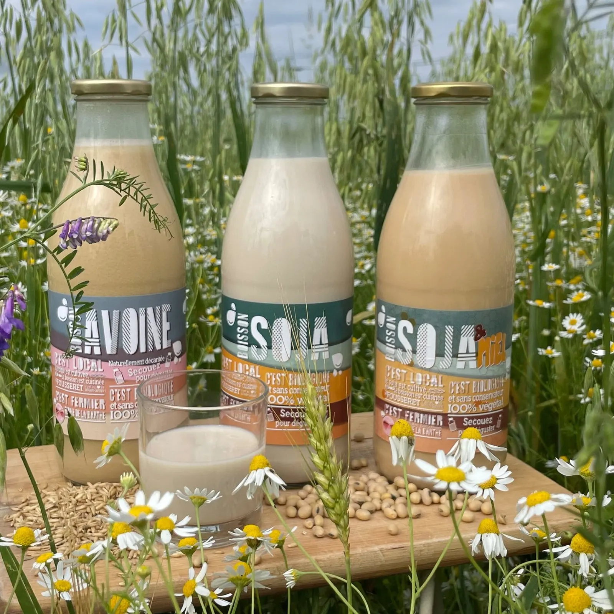
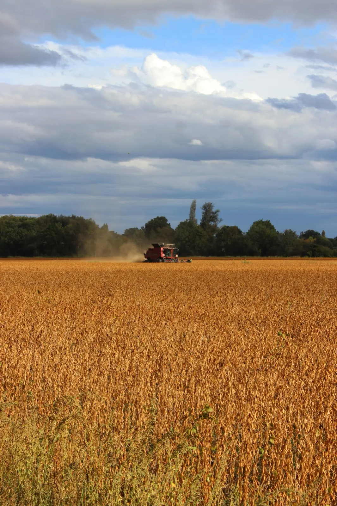
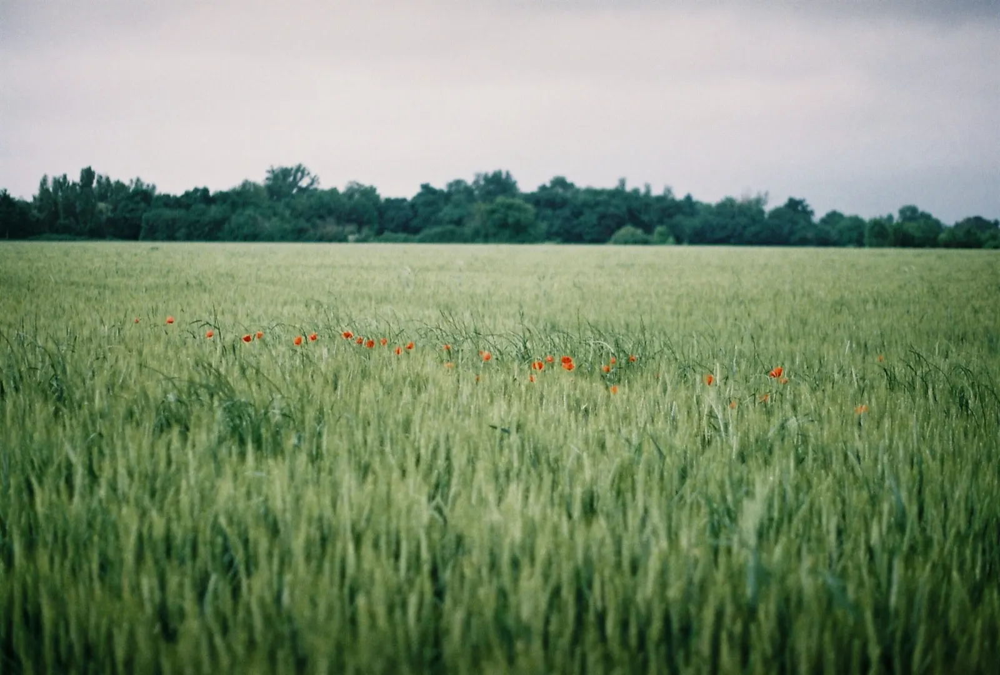
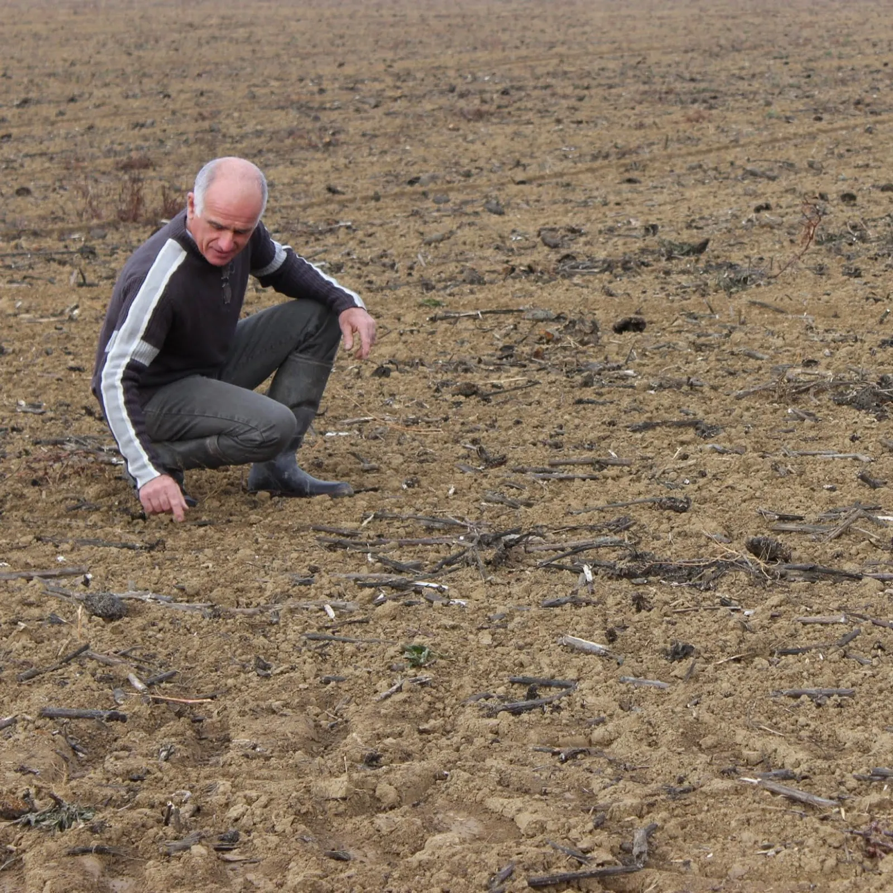
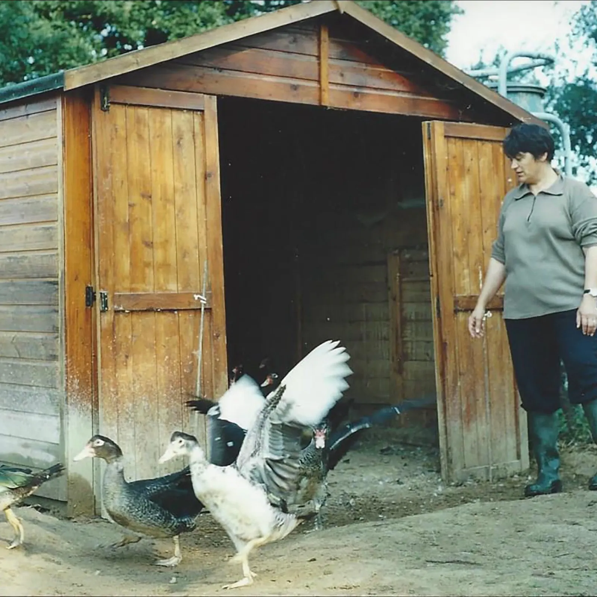
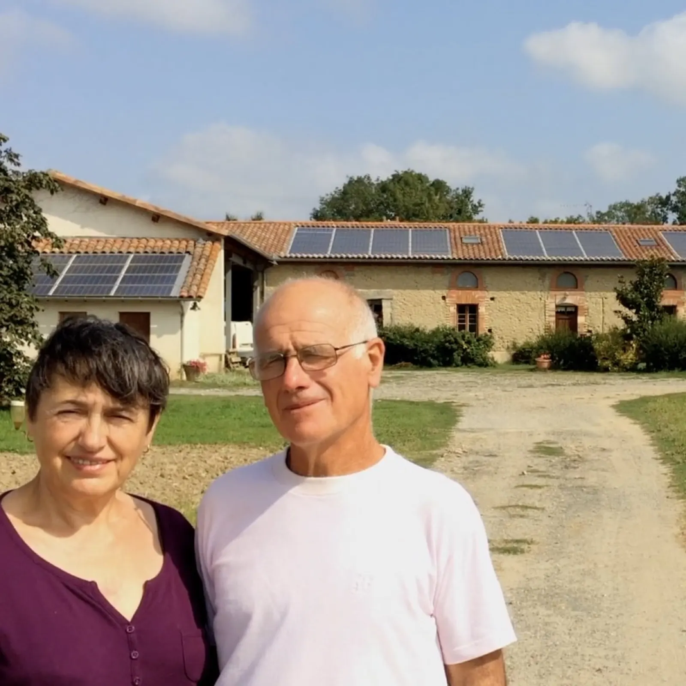
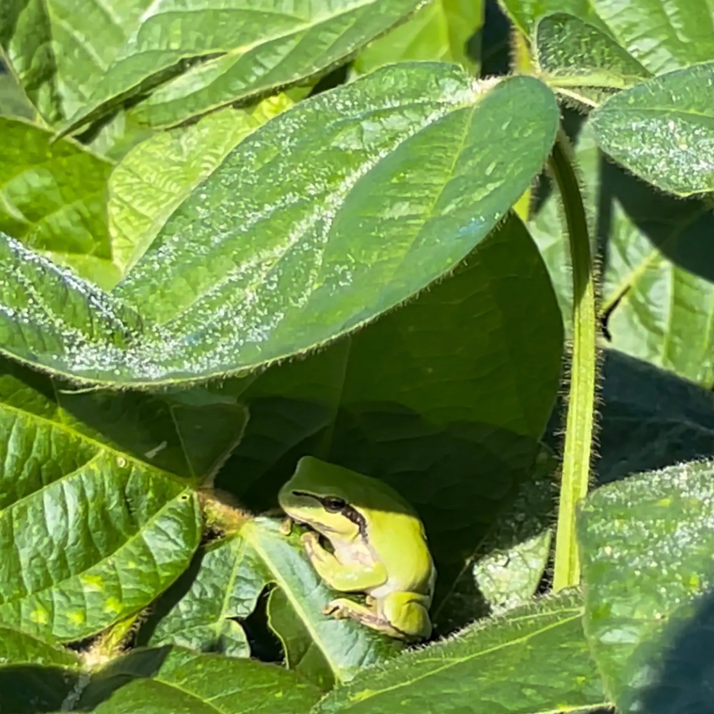
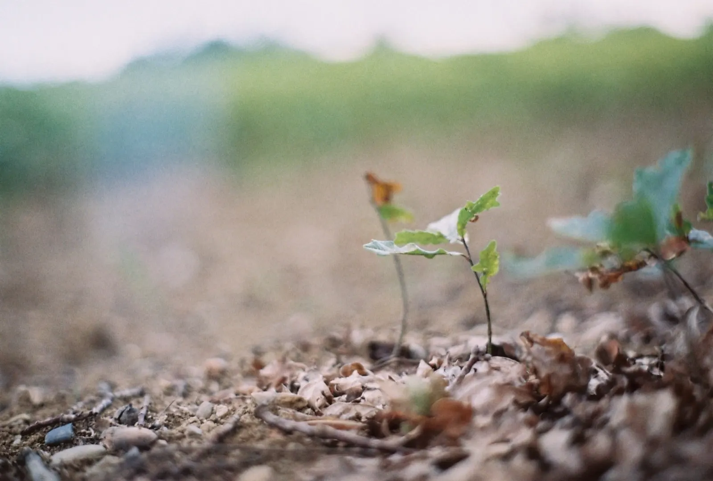

Bienvenue à la Ferme de la Barthe.

Une ferme familiale bio au cœur de la Haute-Garonne. Nous cultivons céréales et protéagineux, et nous en faisons des boissons végétales, réalisées intégralement à la ferme, au Fousseret, du semis des graines jusqu'à l'embouteillage.
- Six boissonssoja, soja & miel, avoine, orge, millet, petit épeautre
- Faites à la fermedu semis à l'embouteillage, au Fousseret
- Certifiées ABpar BIO-01-FR
- Sans conservateursingrédients bio, 100 % naturels
- Bouteilles consignéesdéchets compostés, recyclés ou réutilisés

Des boissons saines et délicieuses
Nos grains viennent d'une sélection naturelle qui se fait d'année en année dans nos champs : c'est ce qui donne un goût authentique à nos boissons.
Nos boissons végétales
Les recettes ont été élaborées par nos soins pour des boissons que l'on boit telles quelles, ou que l'on utilise en cuisine et en pâtisserie.
-
Soja
1 L ou 50 clNaturellement onctueux : à boire tel quel, au petit déjeuner ou en cuisine. Une fois cuit, le goût du soja disparaît au profit des autres aliments. Eau et soja bio et fermier (13 %). Se conserve à température ambiante, DLC de 3 mois.
Soja & miel
Avoine
Orge
Petit épeautre
Millet
Du semis des graines jusqu'à l'embouteillage
Tout se fait à la ferme, de manière artisanale et avec attention. Fabriqués en Occitanie.
- 1
Le semis
Des grains bio issus de nos propres champs, sélectionnés d'année en année.
- 2
Le soin des cultures
Soja, blé, orge, avoine… cultivés selon le cahier des charges de l'Agriculture Biologique.
- 3
La préparation
Des recettes simples, sans conservateurs, préparées à la ferme.
- 4
L'embouteillage
Au Fousseret, en bouteilles consignées.

La Ferme de la Barthe, c'est une histoire de transmissions, de paysage et de savoir-faire.
Plus qu'un projet agricole, un projet de paysage.
Une histoire de famille
Nous sommes agriculteurs, mais pas seulement : nous maîtrisons tout le chemin, de la production de céréales biologiques jusqu'à des produits simples comme les boissons végétales.
- 1979
Installation
Marie-Rose et sa famille, venues d'Aveyron, s'installent à Lavelanet et au Fousseret : une ferme en polyculture élevage, avec des vaches laitières.
- 1983
L'Aveyron rencontre la Gascogne
Jacques, le Gascon, épouse Marie-Rose, l'Aveyronnaise, et rejoint le GAEC. Naîtront deux petites filles. Marie-Rose commence un atelier de canard gras.
- 1995
Changement de perspective
Marie-Rose et Jacques continuent le canard gras et les céréales. Ils stockent le grain et essaient l'arrêt du labour, le semis direct et les couverts végétaux.
- 2015
Un projet de transmission
Pendant ses études de paysage, Johanna, la petite dernière, songe à reprendre la ferme. La conversion bio démarre en 2016, et Johanna rejoint ses parents en 2017.
- 2020
Johanna reprend la ferme
À la suite de Marie-Rose et Jacques, ses parents, toujours actifs à ses côtés, elle garde les grandes cultures et crée l'atelier des boissons végétales. Aujourd'hui, nous travaillons à 8 mains.





Une agriculture respectueuse de l'environnement
Les savoir-faire agronomiques développés sur la ferme ont une priorité : le respect des écosystèmes qui la constituent.
Obtenir un système écologiquement équilibré et durable est un long chemin. La vente des boissons fait avancer notre projet agroécologique : plantations d'arbres, nouvelles techniques agronomiques, vergers.
- Haies plantées
- Un troupeau de brebis
- Préservation des sols
- Déchets compostés
- Bouteilles consignées
Où trouver nos boissons
Nous n'avons pas de magasin à la ferme : nos boissons sont en vente dans des points de vente de Haute-Garonne, du Tarn, de l'Ariège et de la Gironde. Par exemple :
- Campillo1 rue Job, 31000 Toulouse
- Ferme Attitude St George23 rue d'Astorg, 31000 Toulouse
- Biocoop Martres-Tolosane56 bis avenue des Pyrénées, 31220 Martres-Tolosane
Nous accueillons du public 1 à 2 fois par an, pour des marchés ou des journées à thème. Pour être prévenu, envoyez-nous un mail avec vos coordonnées.